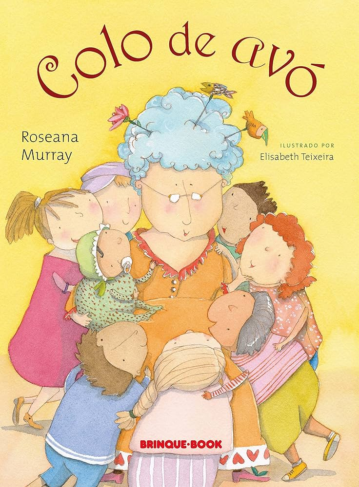

Conheça algumas obras desta autora:
Classificados poéticos (2010)
Receitas de olhar (1997)
O Braço Mágico - um livro de Roseana Murray (2024)
Manual da delicadeza de A a Z
Fruta no ponto (1986)
Perfumes (2020)
Poemas e comidinhas (2023)

Colo de avó (2016)
Brinquedos e brincadeiras (2014)
Tantos medos e outras coragens (1982)
Fardo de carinho (2009)
Jardines (2011)
Poemas para ler na escola (2011)
Artes e ofícios (1990)
Poema do céu (2009)
Fábrica de poesia (2008)
Duas casas (2017)

Poesia essencias (2002)

Armarinho mágico (2018)
Felicidade (2022)
Lista de Obras
- 1980 - Fardo de Carinho
- 1981 - No País das Coisas Impossíveis
- 1983 - No Mundo da Lua
- 1984 - Classificados Poéticos
- 1984 - O Traço e a Traça
- 1984 - Viagens
- 1985 - Lições de Astronomia
- 1985 - O Circo
- 1986 - Fruta no Ponto
- 1987 - Um avô e seu Neto
- 1987 - Falando de Pássaros e Gatos
- 1988 - Paredes Vazadas
- 1989 - Buraco no Céu
- 1990 - Artes e Ofícios
- 1990 - Retratos
- 1991 - Criança é Coisa Séria
- 1992 - Pássaros do Absurdo
- 1994 - Dia e Noite
- 1994 - Casas
- 1994 - No Fim do Arco-Íris
- 1994 - Qual a Palavra?
- 1994 - Tantos Medos e Outras Coragens
- 1994 - O Fim da Meada
- 1995 - De que Riem os Palhaços?
- 1995 - Felicidade
- 1995 - Duas Amigas
- 1996 - Paisagens
- 1996 - O Mar e os Sonhos
- 1996 - Três Velhinhas
- 1997 - Receitas de Olhar
- 1997 - Terremoto Furacão
- 1997 - A Bela Adormecida e Outros Contos de Perrault
- 1998 - Estação Lunar
- 1998 - Uma História de Fadas e Elfos
- 1998 - Porta A Porta
- 1999 - Um Deus para 2000
- 2000 - O Silêncio dos Descobrimentos
- 2000 - Um Cachorro para Maya
- 2023 - Emaranhado